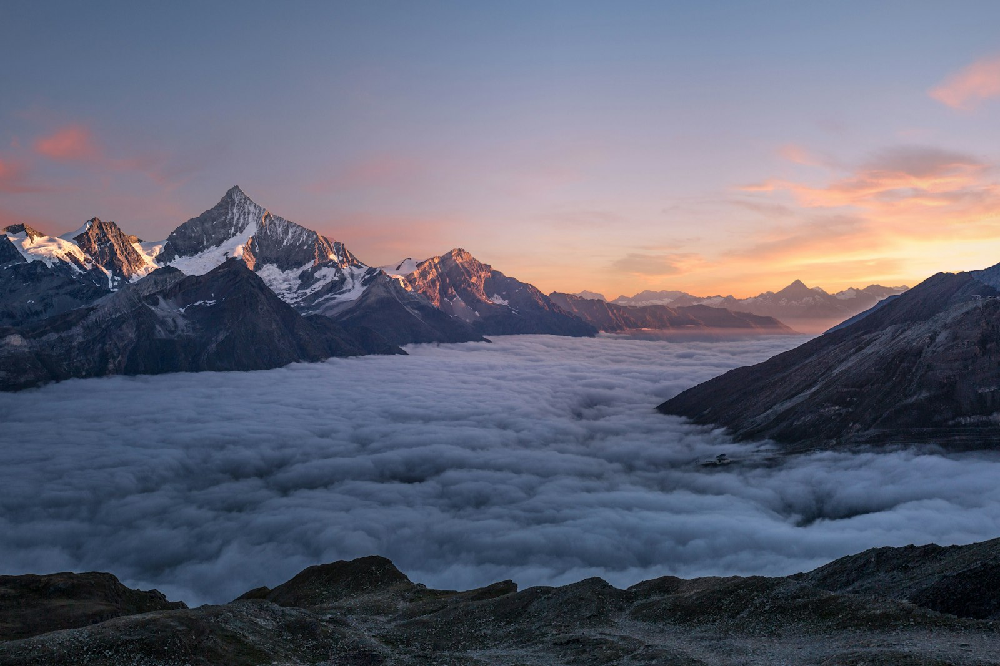

01 / 05
Gulmarg
ALT 2,650 M
Meadows that end in glaciers.
Some places you visit.
This one, you feel.
34.0837°N — 74.7973°E
01 — WHERE WE TAKE YOU
01 / 05
ALT 2,650 M
Meadows that end in glaciers.

02 / 05
ALT 2,730 M
The meadow of gold.

03 / 05
ALT 2,414 M
Where the green never ends.

04 / 05
ALT 1,585 M
A city that floats.

05 / 05
ALT 2,400 M
The valley time forgot.
02 — SIGNATURE JOURNEYS
7 DAYS · SRINAGAR – GULMARG – PAHALGAM
Houseboat mornings, meadow picnics, a gondola above the clouds — slow days built for two.
₹0 / PERSON
10 DAYS · THE FULL CIRCUIT
Every room of paradise: lakes, meadows, glaciers, and the road to Gurez. Our flagship.
₹0 / PERSON
5 DAYS · GUREZ & ARU · OFFBEAT
No itinerary worship. Ridge walks, village teas, rivers with no names on maps.
₹0 / PERSON
“And in the evening, the lake turns to glass.”
03 — TRAVELERS' WORDS
“We came for the mountains. We left with a second home.”
“I have never heard silence like Gurez at dawn.”
“Ten days felt like one long, beautiful film.”
“Our kids still talk about the shikara man's songs.”
The valley heard you. We'll write to you within a day.